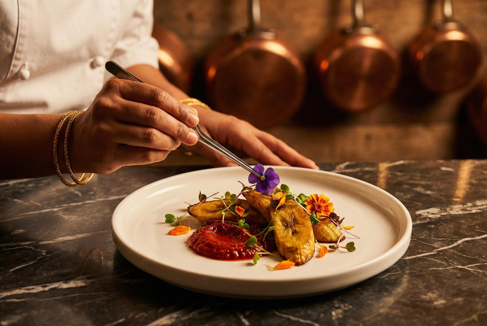
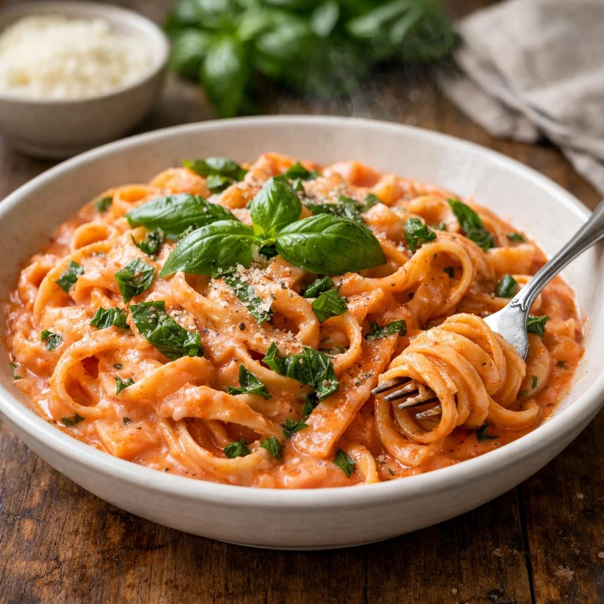
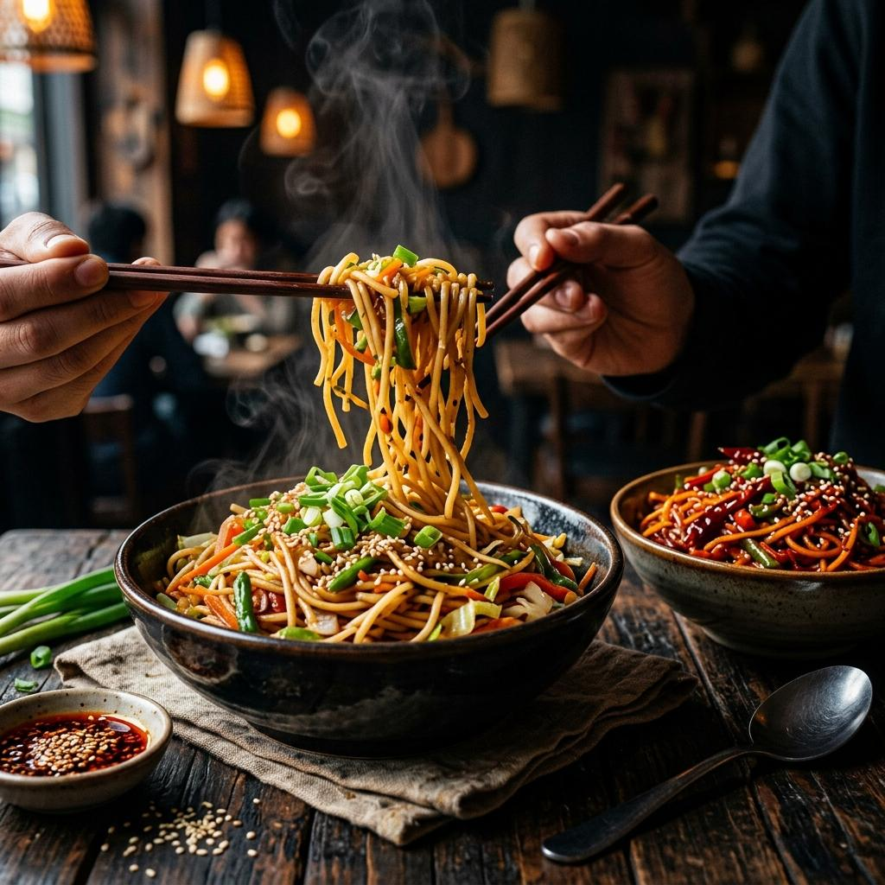

Fresh Thinking
Discover seasonal ingredients, thoughtful preparation, and simple ways to bring more flavour to every dish.
We believe every great meal begins with curiosity, grows through creativity, and becomes unforgettable when shared with others.
Discover Our Story

Savor & Sage Cooking Studio was created around one simple idea: cooking should be joyful, approachable, and full of discovery.
Our studio brings people together to explore ingredients, learn practical techniques, experiment with new flavours, and create dishes they feel proud to share.
Whether you're stepping into a kitchen for the first time or refining skills you already have, there's always something new to discover here.
Explore Our ClassesEvery class is an opportunity to slow down, explore real ingredients, and discover the joy of creating something from scratch.
Our cooking philosophy centres on thoughtful, creative cooking that feels welcoming rather than intimidating. Instead of rushing through steps, we encourage learners to observe textures, aromas, and flavours as every dish takes shape.
Working closely with fresh ingredients is where creativity begins. Through practical, hands-on experience and a genuine passion for food and cooking, students build instincts they can carry back into their own kitchens every day.
Discover seasonal ingredients, thoughtful preparation, and simple ways to bring more flavour to every dish.
Build confidence through hands-on practice, helpful guidance, and techniques you can use in your own kitchen.
Enjoy a welcoming space where people connect, share ideas, and create memorable experiences around food.
Learn alongside instructors who bring patience, clarity, and enthusiasm to every session. Profile cards below use editable placeholders for instructor names and biographies.
Guides foundational Cooking Essentials classes covering knife skills, ingredient preparation, and dependable everyday cooking techniques. Replace this placeholder bio with verified instructor details.
Specialty: Cooking Essentials & TechniquesLeads hands-on World Cuisines sessions focused on global flavours, traditional cooking methods, and balanced flavour pairings. Replace this placeholder bio with verified instructor details.
Specialty: World Cuisines & Flavour Pairing
BAKING & WORKSHOPSFacilitates Baking & Desserts and Weekend Workshops, helping learners master measurements, baking fundamentals, and plating. Replace this placeholder bio with verified instructor details.
Specialty: Baking, Desserts & WorkshopsEvery session is structured to help you feel comfortable in the kitchen, practise practical skills, and enjoy learning at your own pace.
Prepare dishes directly at your workstation rather than just watching, turning every recipe into active, memorable kitchen practice.
Clear pacing breaks each dish into approachable stages so both first-time cooks and returning enthusiasts stay confident.
Focus on everyday skills—chopping, heat control, seasoning, and preparation—that transfer naturally to your home kitchen.
Ask questions openly, taste ingredients along the way, and explore flavour adjustments in a collaborative studio atmosphere.
Grow from essential kitchen foundations into world cuisines and baking, building lasting confidence with every class completed.
Enjoy a friendly, welcoming space where curiosity is encouraged, mistakes become learning moments, and cooking stays joyful.
Our cooking studio is designed to make learning feel natural. From preparing your ingredients to sharing the finished dish, every part of the experience invites you to get involved.
Our studio kitchen brings together organised workstations, dependable cooking equipment, and everyday preparation tools in a bright, comfortable learning environment.
Spacious preparation islands and shared counters arranged so every student can see, prep, and cook comfortably.
Practical stovetops, ovens, and cooking surfaces set up for demonstrations, baking sessions, and guided classwork.
Cookware, cutting boards, knives, mixing bowls, and prep utensils prepared cleanly ahead of each session.
An inviting studio environment designed for focused hands-on training, conversation, and sharing finished dishes.

Find a class, discover a new favourite dish, and make room for more creativity in your kitchen.
Explore Cooking Classes